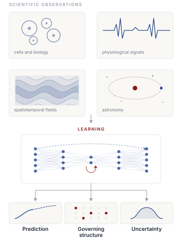
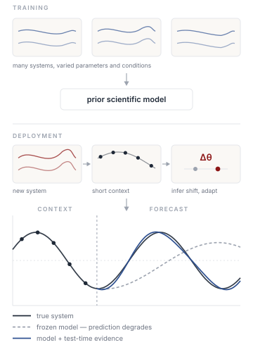
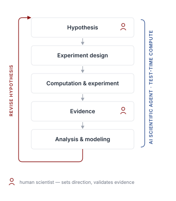

ResearchMy research asks how AI can turn complex scientific observations into reliable models, keep those models trustworthy when the physical world changes, and eventually take part in the scientific discovery loop itself. The work spans deep learning and scientific domains including biology, physiology and healthcare, physics, astronomy, and complex spatiotemporal systems, and it returns throughout to the same concerns: prediction, interpretability, robustness and stability, uncertainty, and generalization beyond the training distribution. 01 Understand Learning and Discovery from Complex Scientific DataModern science produces data from expensive experiments that are increasingly rich and high-dimensional. One important goal of my research is to develop methods to uncover the underlying structure behind it: latent structures, governing equations, and their mechanisms. I work on problems across biology, physiology, physics, astronomy, healthcare, and other domains where recovering even one additional organizing principle carries real scientific value. In these settings, a scientific model should also be interpretable, stable under perturbation, robust to imperfect measurement, and able to generalize beyond the conditions on which it was trained.  02 Generalize Learning at Test TimeA scientific model rarely meets the same system at deployment that it saw during training. Physical parameters, forcing, boundary conditions, geometry, experimental conditions, or patient-specific physiology may all differ. A model restricted to a fixed pre-training model has to extrapolate across whatever shift separates the two, and its accuracy can dramatically degrade in ways that are difficult to anticipate from training data alone. I study a different paradigm: use a small amount of evidence gathered from the system at test time to infer what has changed, and adapt the model accordingly. This places test-time learning alongside system identification, hybrid mechanistic–neural modeling, and few-shot adaptation: related but distinct traditions, each answering part of the question. The broader question I am after is what a scientific model should infer or update at test time so that it remains reliable in a genuinely new physical environment.  03 Discover AI Scientists and Closed-Loop DiscoveryWorking across different scientific applications has made me more interested in what they share. I found many scientific workflows follow a common discovery loop (quote Jeff Dean): formulate a hypothesis, design a computational or physical experiment, analyze the resulting evidence, revise the model, and decide what to test next. I am interested in AI systems that can operate inside this loop, using tools, computation, experiments, and feedback to improve scientific hypotheses and models over successive iterations. This extends test-time computation beyond adapting a single predictive model: the workflow itself becomes an iterative process of inference and decision-making. Recent multi-agent systems suggest that individual components of this loop are becoming tractable, though the systems demonstrated so far remain semi-autonomous and still depend on human scientists for direction and on conventional experiments for validation. I am working on agents that can operate inside this loop, and their evaluation is helping me see which parts of the process are within reach, and which parts are still beyond our reach.  |